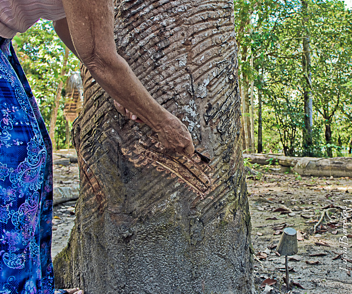

Seringueira
A seringueira (Hevea brasiliensis) é uma árvore nativa da região amazônica e é a principal fonte de látex natural, usado para produzir borracha.
Características da Seringueira
- Nome científico: Hevea brasiliensis.
- Família: Euphorbiaceae.
- Altura: Pode atingir até 30 metros de altura na floresta nativa, mas em plantações comerciais geralmente é menor.
- Folhas: Compostas e com três folíolos.
- Flores: Pequenas, esbranquiçadas ou amareladas, dispostas em cachos.

Origem e Distribuição
- Origem: Floresta Amazônica (Brasil, Bolívia, Peru).
- Foi levada para o Sudeste Asiático no final do século XIX, onde hoje se concentra a maior produção mundial (Malásia, Indonésia, Tailândia).
Cultivo
- Clima: Tropical, quente e úmido.
- Solo: Profundo, bem drenado, rico em matéria orgânica.
- Ciclo: Começa a produzir látex com cerca de 6 a 7 anos de idade e pode produzir por 25 a 30 anos.
Importância Econômica
- A borracha natural é usada na fabricação de pneus, luvas, preservativos, mangueiras, calçados e muitos outros produtos.
- O Brasil já foi o maior produtor mundial no século XIX, mas hoje sua produção é modesta em comparação à Ásia.